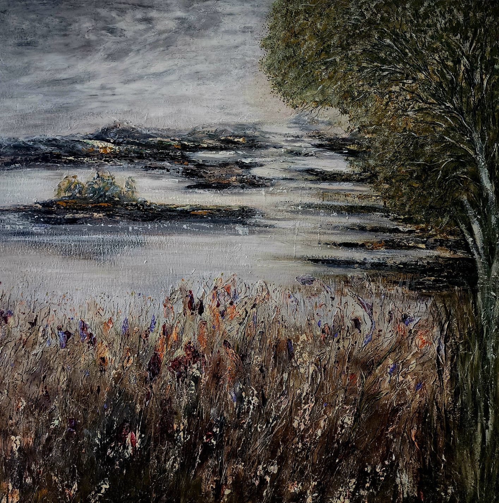

About the Artist
The story behind the art

Inesa Cole
Inesa Cole is a contemporary artist specialising in textured paintings that bridge the gap between the visual and the tactile. Working primarily in oil and acrylic on canvas, her pieces invite the viewer to experience art beyond the purely visual - to feel the landscape, sense the wind, and hear the silence of a distant horizon.
Her work draws inspiration from the natural world - the raw energy of coastal storms, the quiet dignity of rural landscapes, and the fleeting beauty of light on water. Each painting is built up in layers using palette knives and heavy impasto techniques, creating surfaces rich with depth and dimension.
Every piece is an original, one-of-a-kind creation. Inesa believes that art should be accessible and meaningful, a window into a moment of beauty that enriches everyday life.
- Medium
- Oil & Acrylic on Canvas
- Style
- Textured Landscapes, Impasto
- Based In
- United Kingdom
Get in Touch
Interested in a painting, a commission, or just want to say hello? Reach out anytime.
Contact Inesa